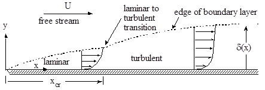
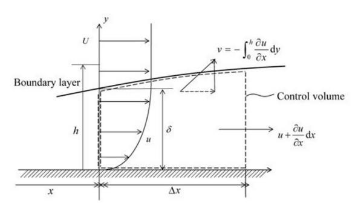
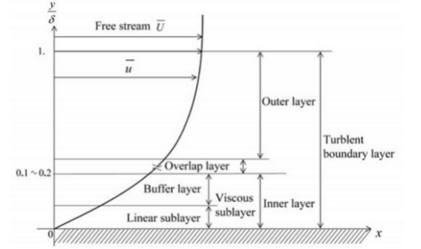

Boundary Layer. An introduction
Contents
Boundary Layer. An introduction¶
1. Blasius theory¶
We consider a uniform flow in the \(x\) direction, \(\boldsymbol{u} = (U,0,0)\), and a plane semi-infinite plate on \(x-z\) plane, normal to \(y\) axis, and with one edge on the \(z\) axis.
The non-slip condition of the flow on the plate, \(\boldsymbol{u} = (0,0,0)\) for \(y=0\), produces a development of the flow on the \(y\) direction on a region known as boundary layer (BL). This perturbed flow extend up to a distance \(\delta\), the BL thickness, that is, in general, function of \(x\). If the flow \(U\) is slow, compared with a reference viscosity-related velocity, \(\frac{\nu}{x}\) or \(\frac{\nu}{\delta}\), the viscosity will keep the inertial term low and it prevent the boundary layer from becoming turbulent. But when the BL reachs a certain point \(x\), the inertial term (mainly the convective one) will gain importance and the BL will eventually evolve to a turbulent regime.

In this section we are going to focus on the laminar regime. The turbulent BL will be studied in the next part.
As usual, we start with N-S and continuity equations for the non-perturbed (outside the BL) flow, assumed inviscid.
and in the perturbed flow (inside the BL)
En general, we are going to consider only steady flows (or with very smooth variation in time) and, for a certain position \(x = L\), we can make a first estimation of scales by considering
Then continuity equation (4) holds \( V \sim U \frac{\delta}{L}\), and, hence, it is deduced that the BL is very thin compared with length of flow development \(\delta \ll L\). Replacing the scales estimations in \(x\) N-S equation, (2), and using that \(\frac{U}{L^2} \ll \frac{U}{\delta^2}\), we get that convective and viscous terms are of the same order if
From this simple scales analysis we get an important result that indicates the growth of the BL thickness
By comparing scales between equations (3) and (4) it can be shown that \(\frac{\partial p}{\partial x} \gg \frac{\partial p}{\partial y}\) and, hence, the pressure inside the BL is, in the practice, determined by the pressure in the unperturbed flow outside the BL.
After scaling N-S and continuity equations, BL layer can be described with
continuity : $\( \frac{\partial u}{\partial x} + \frac{\partial v}{\partial y} = 0 \tag{9} \)$
x-momentum : $\( \frac{\partial u}{\partial t} + u\frac{\partial u}{\partial x} + v\frac{\partial u}{\partial y} = -\frac{1}{\rho}\frac{\partial p}{\partial x} + \nu \frac{\partial^2 u}{\partial y^2} \tag{10} \)$
y-momentum : $\( \frac{\partial p}{\partial y} = 0 \tag{11} \)$
and, for the non-perturbed flow, again,
It is important to note that gradient pressure term in BL equations is determined by the flow outside BL.
These equations are valid for plane surface or with a very low curvature.
For the particular case of steady flow without pressure gradient, Blasius (1908) found an analytical solution by introducing dimensionless variables for \(y\):
and for \(u(x,y)\):
Since it is a 2D incompressible flow, it is possible to write in terms of a stream function \(\psi(x,y)\) so that
From here, we get that
where \(f(\eta) = \int g(\eta) d \eta\). Velocities are then written in terms of \(f\) as
And gathering everything in the N-S equations, we get an only equation
with the boundary conditions
2. Solution of the Blasius equation¶
This equation cannot be solved with odeint, since it is not an initial value problem, but a boundary value problem. We are going to solve it with the solve_bvp method in the scipy.ode package.
First, we decompose the 3rd order ODE in a system of 3 first-order ODE’s, as
with \(f_0=f\) and the boundary conditions
First, we import the needed modules
from scipy.integrate import solve_bvp
import numpy as np
Now, we define our system of ODE’s, with a function that return the derivatives of \(f\)
def func(x,f):
return np.vstack((f[1],f[2],-0.5*f[0]*f[2]))
and, also, we define the boundary values, as residuals (that has to tend to 0) for initial (\(a\)) and final (\(b\)) values of the functions. The number of elements in the return array has to be the same as the number of equations.
def bc(fa,fb):
return np.array([fa[0],fa[1],1.0-fb[1]])
Here we prepare the solution. The domain of \(\eta\) has been chosen as [0,10], and initially, \(f_i = 0\) in all the domain.
eta = np.linspace(0,10,100)
f_init = np.zeros((3,eta.size))
Finally, we call the solver
sol = solve_bvp(func,bc,eta,f_init)
The return has a lot of information. The most important are sol.y[i], which is the solution for \(f_i\) in the points defined by the eta array (which is stored in sol.x), and sol.sol, which is an interpolation instance as cubic spline, that allows to estimate the values for any value of \(\eta\) in the domain.
Let’s we make some plots.
import matplotlib.pyplot as plt
fig,ax = plt.subplots(1,3,figsize=(30,10),sharey=True)
ax[0].plot(sol.y[0],eta)
ax[1].plot(sol.y[1],eta)
ax[2].plot(sol.y[2],eta)
ax[0].set_ylabel(r'$\eta$',fontsize = 16)
ax[0].set_xlabel(r'$f$',fontsize = 16)
ax[1].set_xlabel(r'$\frac{df}{d\eta} = \frac{u}{U}$',fontsize = 16)
ax[2].set_xlabel(r'$\frac{d^2 f}{d \eta^2}$',fontsize = 16)
Text(0.5, 0, '$\\frac{d^2 f}{d \\eta^2}$')

This theoretical solution gives an infinite thickness of the BL, since, strictly speaking, \(u=U\) is reached asymptotically for \(\eta \rightarrow \infty\). Hence, it has been agreed that the thickness of the BL extends up to \(0.99U\). We find now which value of \(\eta\) gives this velocity, using the method for root finding brentq from the scipy.optimize package.
from scipy.optimize import brentq
def etaBL(x):
return (sol.sol(x)[1]-0.99)
etaBLSol = brentq(etaBL,4,6)
etaBLSol
4.910933508107021
Hence, the Blasius BL extends up to \(\eta = 4.91 \approx 5\), that is, \(\delta \approx \frac{5}{\sqrt{\frac{U}{\nu x}}}\),
We re-escale now the \(\eta\) variable, so that \(\eta=1\) is the BL thickness
eta = eta/etaBLSol
fig,ax = plt.subplots(1,3,figsize=(30,10),sharey=True)
ax[0].plot(sol.y[0],eta)
ax[1].plot(sol.y[1],eta)
ax[2].plot(sol.y[2],eta)
ax[0].set_ylabel(r'$\eta$',fontsize = 16)
ax[0].set_xlabel(r'$f$',fontsize = 16)
ax[1].set_xlabel(r'$\frac{df}{d\eta} = \frac{u}{U}$',fontsize = 16)
ax[2].set_xlabel(r'$\frac{d^2 f}{d \eta^2}$',fontsize = 16)
Text(0.5, 0, '$\\frac{d^2 f}{d \\eta^2}$')
Exercise (easy):¶
Compute the stress on the wall in the Blasius BL.
3. Integral Analysis of BL. The von Kármán equation.¶
Direct analytical solution of the BL is only possible, with a medium difficulty, for laminar, (quasi)uniform and steady flow, as we have previously seen.
Nevertheless, most of the times, a good approximation can be achieved if velocity profile is assumed known and BL equation (9) is integrated in the BL thickness. Then the wall friction can be estimated for any kind of flow (unsteady, turbulent, with pressure gradient…)
The Volume Control is not exactly integral, but semi-integral, with an extension \(\text{d}x\) in the flow direction. It is sketched here:

We integrate BL equation from \(y=0\) (the wall) to \(y=h\) where \(h\rightarrow \infty\)
The term of pressure gradient can be replaced by the behavior of (inviscid) flow outside of the BL (equation (6))
yielding
The component \(v\) of velocity can be obtained in term of \(u\) by integrating continuity equation (4), \(v = -\int_0^\infty\frac{\partial u}{\partial x} dy\) and, hence, after integrating by parts,
Collecting all together, we get
and, after, rearranging terms and factorizing,
and defining the displacement thickness, \(\delta'\), and momentum thickness, \(\theta\), as
the von Kármán (1921) equation is finally obtained
This equation relates, knowing the velocity profile \(\frac{u}{U}\left(\frac{y}{\delta}\right)\), the BL thickness, \(\delta\) with the wall friction \(\tau_w\).
As an example, for steady uniform non-perturbed flow \(U\), this simplifies to
regardless the turbulent regime of the flow.
The momentum thickness \(\theta\) is usually considered as an important scale for the description of the BL.
Let’s compute the displacement and momentum thicknesses for the Blasius BL.
from scipy.integrate import simpson
from IPython.display import Latex
displThicknessBlasius = simpson((1-sol.y[1]),eta)
Latex(r'$\delta^\prime = {:.3g}\,\delta$'.format(displThicknessBlasius))
momentumThicknessBlasius = simpson(sol.y[1]*(1-sol.y[1]),eta)
Latex(r'$\theta = {:.3g}\,\delta$'.format(momentumThicknessBlasius))
When the velocity profile in the BL is unknown, it is usual to model it with an arbitrary function \(\frac{u}{U}=f(\eta)\) that fulfills the conditions:
The simplest example is a the piecewise second degree polynomial
Let’s compare it with the Blasius velocity profile.
Remember that we have a sol.sol function that returns the velocity profile for any value of the original \(\eta\) (not normalized with BL thickness). We construct a function that returns the actual value in function of the present \(\eta\) for Blasius and the 2nd degree polynomial
def uoverUBlasius(eta):
return sol.sol(eta*etaBLSol)[1]
def uoverU2ndDeg(eta):
return np.piecewise(eta,[eta<1,eta>=1],[lambda eta:(2*eta-eta*eta),1])
eta = np.linspace(0,2,100)
fig,ax = plt.subplots(1,1,figsize=(8,8))
ax.plot(uoverUBlasius(eta),eta, label = 'Blasius')
ax.plot(uoverU2ndDeg(eta),eta, label = '2nd degree')
ax.set_xlabel(r'$\frac{u}{U}$',fontsize = 16)
ax.legend();
Exercise:¶
Compute \(\delta^\prime\) and \(\theta\) for the 2nd degree approximation. Use (9) to compute \(\delta(x)\) and compare with Blasus
4. Turbulent BL¶
When flow is turbulent, according to the Reynolds Averaged Navier-Stokes equations, equation for the BL is practically the same as (5), but \(u\) is replaced by \(\overline{u}\) (we get an equation for averaged velocity) and an extra term \(\frac{\partial}{\partial y}\left(-\rho \overline{u'v'}\right)\). known as Reynolds turbulent stress tensor, appears.Hence,
One way to model this term is with the definition of an eddy viscosity , according to the Boussinesq aproximation. The Reynolds term is then written in terms of the average velocity as
Note that \(\nu_t\) is not a property of the fluid (like molecular viscosity) but of the flow (like velocity) and, so, it is function of space and time. The effective viscosity is, therefore, the sum of both of them, and the viscous term can be written as
But with that the problem is not solved, only it has been transferred to another unknown, \(\nu_t\). A successful approach is the Prandtl’s mixing length.
where, in the case of turbulent BL, the mixing length \(l\) can be estimated in function of the distance to the wall.
In a turbulent BL several regions can be defined.

But, before, we have to define the normalization of this kind of BL. In a turbulent BL the effect of the wall is very important,so, it is very usual to normalize the velocity inside the BL, \(\overline u\) using the wall friction instead of the free stream velocity. Therefore, a friction velocity \(u_\tau = \sqrt{\frac{\tau_w}{\rho}}\) is defined, and a dimensionless distance \(y^+\) and velocity \(u^+\) are defined as
The two main regions of the TBL are the Inner layer, which extends up to \(y^+ \approx 35\), and the Outer layer, that begins around \(y^+ \approx 350\). Between these regions there is an Overlap layer.
In the Inner layer the influence of the wall is specially important, and the mixing length depends strongly on its distance. In the overlap layer it is considered that the mixing layer increase linearly with the distance to the wall and, finally, in the Outer layer, the wall is so far away that there is no dependence on the distance.
In the most adjacent layer, the viscous sublayer, the turbulence is low and the flow is dominated by viscosity, yielding a Couette-like flow with a linear profile \(u^+ = k_l y^+\), where \(k_l\) is a constant, that is has been measured as \(k_l \approx 1\). This behavior is typically valid up to \(y^+ \approx 5 \div 10\)
On the overlap region, though, turbulent viscosity is much bigger than molecular viscosity, and it can be assumed that \(\nu + \nu_t \approx \nu_t\). Hence, with the mixing length model,
Assuming that this stress is the same than in the wall, \(\tau_t \approx \tau_w\) we can get the relationship
that leads to
where \(a\approx 0.41\) and \(b\approx 5.0\)
Between viscous sublayer and the overlap region there is the buffer layer, up to \(y^+ \approx 30\), where neither law hold.

In the outer layer, the velocity defect, \(U-\overline{u}(y)\) is considered to be function only of the distance to wall, \(y\). In dimensionless way it is written as
Now the question is: how can we get \(\tau_w\) from these expressions? We cannot use Newton’s law \(\tau_w = \mu u_{,y}(y=0)\), since the log law does not reach the wall and the slope for he linear low in the viscous sublayer is unknown. So, we have to use indirect relationship through the definition of \(u_\tau\) that describes the log law.
We introduce the definition of the skin factor
and, also we are going to use \(Re_\delta = \frac{\delta U}{\nu}\)
import sympy as sp
uPlus, yPlus, a, b = sp.symbols('u^+,y^+,a,b',positive=True)
LogLaw = sp.Eq(uPlus,1/a*sp.ln(yPlus)+b)
LogLaw
y,u,rho,tauW,nu = sp.symbols('y,u,rho,tau_w,nu',positive=True)
LogLaw = LogLaw.replace(uPlus,u*sp.sqrt(rho/tauW)).replace(yPlus,y/nu*sp.sqrt(tauW/rho))
LogLaw
delta, U = sp.symbols('delta,U',positive=True)
LogLawDelta = LogLaw.replace(y,delta).replace(u,U)
LogLawDelta
cf, ReDelta = sp.symbols('c_f,Re_delta',positive=True)
LogLawDelta = LogLawDelta.replace(tauW,cf*sp.Rational(1,2)*rho*U**2).simplify()
LogLawDelta
LogLawDelta = LogLawDelta.replace(delta, ReDelta*nu/U).simplify()
LogLawDelta
LogLawDelta = LogLawDelta.replace(a,0.41).replace(b,5)
LogLawDelta
ReDeltaSol = sp.solve(LogLawDelta,ReDelta)
ReDeltaSol[0]
ReDelta_n = sp.lambdify(cf,ReDeltaSol)
cf = 0.8
ReDelta_n(cf)
[0.3892288855272373]
try:
%load_ext watermark
except:
!pip install watermark
%watermark -v -m -iv
Python implementation: CPython
Python version : 3.9.12
IPython version : 8.2.0
Compiler : GCC 7.5.0
OS : Linux
Release : 5.4.0-113-generic
Machine : x86_64
Processor : x86_64
CPU cores : 8
Architecture: 64bit
numpy : 1.21.5
sympy : 1.7.1
matplotlib: 3.5.1